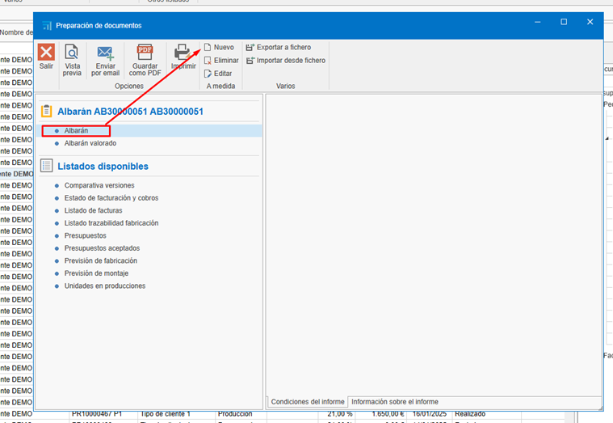

Creación y edición de informes personalizados
1. Introducción
Este manual tiene como objetivo guiar a los usuarios en la creación y modificación de nuevas plantillas de informes personalizados sin la necesidad de configurar una nueva plantilla. El proceso está diseñado para ser sencillo y evitar confusiones, permitiendo a los usuarios adaptar los informes a sus necesidades específicas de manera eficiente.
2. Creación de un informe personalizado
Para generar un informe basado en uno existente, sigue estos pasos:
-
Ubicar el informe base:
- Navega hasta el informe que deseas utilizars como base para tu nuevo informe personalizado.
-
Crear una copia del informe:
- Selecciona la opción para crear un nuevo informe a partir del existente. Esto generará una copia exacta del informe original, la cual podrás modificar sin afectar al informe base.


3. Edición del informe
Una vez que hayas creado la copia del informe, sigue estos pasos para personalizarlo:
-
Ubicar el informe recién creado:
- Accede al informe que acabas de copiar.
-
Acceder a la opción de edición:
- Selecciona la opción de edición para comenzar a realizar cambios.

-
Realizar los cambios necesarios:
- Modifica los campos, secciones o datos que requieras. Puedes agregar, eliminar o ajustar la información según tus necesidades. Puedes usar los recursos de edicion que tienes disponible para editar la plantilla:

-
Guardar el informe:
-
Una vez realizados los cambios, guarda el documento para finalizar la edición.

4. Eliminación de elementos adicionales
Si el informe requiere modificaciones más profundas, puedes eliminar secciones o datos innecesarios antes de guardar la versión final. Para ello:
- Identificar elementos innecesarios:
-
Revisa el informe y determina qué secciones o datos no son relevantes para tu propósito.
-
Eliminar elementos:
-
Utiliza la opción de eliminación para quitar los elementos que no necesitas.
- Para algunos informes (como el ejemplo de Albarán) es necesario eliminar una parte del Script. Acceda al apartado de Script:

- Si esas líneas están en el script, elimínalas:


- Volver al apartado de Designer:

-
Guardar los cambios:
Asegúrate de guardar el informe después de realizar las eliminaciones.
6. Uso de la nueva plantilla
Una vez creada el nuevo informe, selecionar y ir a "Vista previa":


5. Consideraciones finales
-
No es necesario configurar una nueva plantilla:
Este proceso te permite modificar informes sin tener que crear una plantilla desde cero. -
Proceso rápido y sencillo:
La clonación y edición de informes es un método eficiente para personalizar documentos. -
Revisión final:
Antes de guardar el informe, asegúrate de revisarlo cuidadosamente para garantizar que cumple con los requisitos deseados.
 Español
Español
 English
English
 Italiano
Italiano
 Português
Português